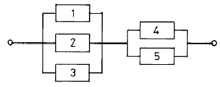
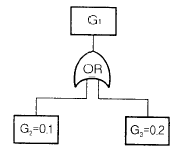
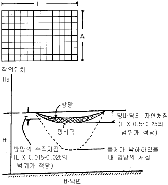

산업안전산업기사 (2002-08-11 기출문제)
1과목: 산업안전관리론
1. 작업에 수반되는 피로의 예방과 대책으로서의 수단이 아닌 것은?
- 작업부하를 크게 할 것
- 정적 동작을 피할 것
- 작업정도를 적절하게 할 것
- 운동시간을 적당히 할 것
(정답률: 94%)

2. 년간 연노동 시간수가 110만 시간이고, 이 기간 중 휴업재해가 12건 발생했다면 빈도율(도수율)은?
- 1.09
- 10.9
- 109
- 1090
(정답률: 64%)
3. 방독 마스크 정화통 내의 정화제에 의해 흡인공기중의 유해물질이 거의 정상적으로 흡수제거 또는 무독화 된후, 정화제의 제독능력이 떨어졌기 때문에 정화통의 배기공기에서의 유해물질 농도가 최대 허용한도를 넘게되는 현상은?
- 격리
- 정화
- 유량
- 파과
(정답률: 73%)
4. 사고 방지 대책 제 5단계의 시정책의 적용에서 3E와 관계가 없는 것은?
- 교육(Education)
- 기술(Engineering)
- 재정(Economics)
- 독려(Enforcement)
(정답률: 60%)
5. 무재해 운동의 3요소가 아 닌 것은?
- 이념 - 최고 경영자의 경영자세
- 상황 - 재해 상황의 파악
- 실천 - 관리 감독자에 의한 안전 보건의 추진
- 기법 - 직장 소집단의 자주활동의 활성화
(정답률: 54%)
6. Maslow, A.H의 욕구(위계이론) 5단계 중 잠재능력의 달성 감등 성취및 실현의 욕구는 어느 단계에 속하는가?
- 생리적인 욕구
- 안전에 대한 욕구
- 사회적,소속감의 욕구
- 자아실현에 대한 욕구
(정답률: 90%)
7. 안전관리(재해방지 대책)를 추진하는 과정에서 가장 먼저 취해야 하는 내용은?
- 작업분석 및 공정 분석
- 안전성 평가.진단
- 시정책의 수립
- 안전기준의 제정
(정답률: 33%)
8. 인간의 의식수준(phase)을 보통 5단계(0∼Ⅳ단계)로 구분한다. 중요하거나 위험한 작업을 안전하게 수행하기 위하여 근로자는 몇 단계의 수준에서 작업하는 것이 바람직한가?
- Ⅰ단계
- Ⅱ단계
- Ⅲ단계
- Ⅳ단계
(정답률: 54%)
9. 100명의 근로자가 근무하고 있는 어떤 화학공장에서 1일 8시간 년간 300일을 근무하고 있다. 일년 동안 8명이 부상 당하는 재해가 발생하여 219일의 휴업손실 일수를 가져왔다면 근로 총 손실일수와 강도율은?
- 160일, 0.91
- 170일, 0.81
- 180일, 0.75
- 190일, 0.64
(정답률: 49%)
10. 학습평가 도구의 기본적인 기준이 아 닌 것은?
- 타당도(妥當度)
- 신뢰도(信賴度)
- 객관도(客觀度)
- 습숙도(習熟度)
(정답률: 59%)
11. 안전교육 중 프로그램 학습법의 장점이라 할 수 있는 것은?
- 기본 개념학이나 논리적 학습에 유리하다.
- 여러가지 수업 매체를 동시에 활용할 수 있다.
- 사실,사상을 시간, 장소의 제한없이 제시할 수 있다.
- 학습자의 태도, 정서등의 감화를 위한 학습에 효과적이다.
(정답률: 34%)
12. 로울러의 청소작업 중 걸레를 쥔 손이 로울러에 말려 들어가 손에 부상을 입은 재해가 발생하였을 때 이때 가해물은 어느 것인가?
- 로울러
- 걸레
- 손
- 로울러기계
(정답률: 66%)
13. 재해예방대책은 5단계 과정을 걸쳐서 계획을 수립하게 된다. 이 때 제4단계에 맞지 않 는 것은?
- 기술적인 개선안
- 작업배치의 조정
- 교육훈련의 개선
- 작업분석
(정답률: 67%)
14. 가죽제 안전화의 성능기준중 중작업용 및 보통작업용의 경우 철못에 관통되지 말 것 이란 다음 시험항목에서 어디에 해당되는가?
- 내압박성
- 내충격성
- 박리저항
- 내답발성
(정답률: 34%)
15. 심리검사의 특징 중 측정하고자 하는 것을 실제로 측정하는 것을 기술용어로 무엇이라 하는가?
- 타당성
- 신뢰성
- 무오염성
- 적절성
(정답률: 31%)
16. 리더쉽 이론 중의 하나인 피들러의 상황부응 이론에서 관계지향적 리더의 L.P.C(least preferred coworker) 점수는 어떻게 나타나는가?
- 높다.
- 낮다.
- 중간이다.
- 상황에 따라 다르다.
(정답률: 49%)
17. 스트레스(Stress)에 관한 설명중 적절한 것은?
- 스트레스상황에 직면하는 기회가 많을수록 스트레스 발생가능성은 낮아진다.
- 스트레스는 직무몰입과 생산성감소의 직접적인 원인이 된다.
- 스트레스는 부정적인 측면밖에 없다.
- 스트레스는 나쁜일에서만 발생한다.
(정답률: 77%)
18. 안전교육의 진행에서 "새로운 지식이나 기능을 설명하고 실연하는 단계"에 해당되는 것은?
- 확인단계
- 제시단계
- 적용단게
- 도입단게
(정답률: 41%)
19. 안전보건 교육의 3단계 지도원칙중 단계별 지도원칙에 해당되지 않 는 것은?
- 태도교육
- 지식교육
- 기능교육
- 습관화교육
(정답률: 79%)
20. 안전관리에 관한 계획에서 실시에 이르기까지 모든 권한이 포괄적이고 직선적으로 행사되며, 안전을 전문으로 분담하는 부서가 없는 안전관리조직은?
- 직계식 조직
- 참모식 조직
- 직계 - 참모식 조직
- 안전보건 조직
(정답률: 78%)
2과목: 인간공학 및 시스템안전공학
21. 정보의 시각적 제시가 바람직한 경우는?
- 주위 환경이 소란할 때
- 정보가 간단하고 직선적일 때
- 정보가 정확한 순간을 다룰 때
- 작동자가 여러곳으로 움직여야 할 때
(정답률: 59%)
22. 다음 항목 중에서 작업장에서 발생하는 소음에 대한 대책으로서 가장 적극적인 대책은?
- 소음원의 격리졺격벽
- 소음원의 제거
- 귀마개, 귀덮개등 보호구의 착용
- 덮개등 방호장치의 설치
(정답률: 69%)
23. 88dB의 소음을 내는 방적기 두대가 있다. 이 방적기 두대가 내는 복합소음은 몇 dB인가?
- 88dB
- 91dB
- 120dB
- 176dB
(정답률: 40%)
24. 가현운동(β 운동)은 무엇을 의미하는가?
- 착각행동
- 착시현상
- 신기루 현상
- 영화영상방법
(정답률: 28%)
25. Man-machine system 에서 인간과 기계에 Lock system을 설치할 때 다음 설명 중 맞는 것은?
- 인간에게 Inter lock system 을 둔다.
- 기계에게 Inter lock system 을 둔다.
- Inter lock system 과 Intra lock system 중간에Trans lock system 을 둔다.
- Trans lock system과 Intra lock system 중간에Inter lock system 을 둔다.
(정답률: 43%)
26. F.T.A(Fault Tree Analysis)에 사용되는 논리 명칭중 입력의 사상 어느 하나가 일어나도 출력의 사상이 일어난다고 할 때 논리명칭은?
- AND GATE
- OR GATE
- 기본사상
- 통상사상(가형사상)
(정답률: 62%)
27. 통제 표시비의 설계시 고려사항이 아 닌 것은?
- 계기의 크기
- 조작거리
- 조작시간
- 방향성
(정답률: 26%)
28. 공장설비를 예방보전에 의하여 방지할 수 있는 고장은 무엇인가?
- 초기고장
- 우발고장
- 마모고장
- 랜덤고장
(정답률: 36%)
29. 인간의 정보처리 능력의 한계는 시간적으로 표시하는 경우 어느 정도인가?(단, 계속 발생하는 신호의 뒷부분을 검출할 수 없는 경우가 가끔 발생 할때의 시간)
- 0.1초 이내
- 0.2초 이내
- 0.3초 이내
- 0.5초 이내
(정답률: 36%)
30. 시스템안전성 평가기법들의 일반적인 장점을 나열한 것이다. 해당되지 않 는 것은?
- 가능성을 정량적으로 다룰 수 있다.
- 시각적표현에 의해 정보전달이 용이하다.
- 원인, 결과 및 모든 사상들의 관계가 명확해진다.
- 연역적 추리를 통해 결함사상을 빠짐없이 도출한다.
(정답률: 55%)
31. 다음 중 인간-기계 체계의 주목적은?
- 피로의 경감
- 경제성과 보건성
- 신뢰성 향상과 사용도 확보
- 안전의 최대화와 능률의 극대화
(정답률: 68%)
32. 시각적 표시장치에서 지침설계의 요령이 아 닌 것은?
- 뽀족한 지침을 사용하라
- 지침의 끝은 눈금과 겹치도록 하라
- 지침을 눈금면에 밀착시켜라
- 원형 눈금일 경우 지침의 색은 선단에서 눈금의 중심까지 칠하라
(정답률: 35%)
33. 다음 그림과 같은 시스템의 신뢰도는 약 얼마인가?(단, 부품1,2,3의 신뢰도는 0.5이고, 부품4,5의 신뢰도는 0.9임)

- 0.62
- 0.74
- 0.87
- 0.99
(정답률: 52%)
34. 진전(손떨림, tremor)을 감소 시킬수 있는 손의 높이는?
- 입높이
- 심장높이
- 배꼽높이
- 무릎높이
(정답률: 62%)
35. 다음 FT에서 G1의 발생확률은?

- 0.02
- 0.28
- 0.98
- 0.72
(정답률: 54%)
36. 기능적으로 분류한 전형적인 안전성 설계기준과 거리가 먼 것은?
- 공장건설 단계
- 기계시스템
- 화기 또는 폭약시스템
- 수송설비
(정답률: 23%)
37. 윗 팔을 자연스럽게 수직으로 늘어뜨린 채, 아랫 팔만으로 편하게 뻗어 파악할 수 있는 구역을 무엇인가?
- 파악한계
- 정상 작업역
- 최대 작업역
- 포락면
(정답률: 52%)
38. 진동이 인간 성능에 끼치는 일반적인 영향과 거리가 먼 것은?
- 진동은 진폭에 비례하여 시력을 손상하며 10-25Hz의 경우 가장 심하다.
- 진동은 진폭에 비례하여 추적 능력을 손상하며 5Hz이하의 낮은 진동수에서 가장 심하다.
- 안정되고 정확한 근육 조절을 요하는 작업은 진동에 의해서 저하된다.
- 반응시간, 감시, 형태 식별 등 주로 중앙 신경 처리에 달린 임무는 진동의 영향에 민감하다.
(정답률: 26%)
39. 작업환경의 개선을 통해 제거할 수 있는 휴먼에라는?
- primary error
- omission error
- secondary error
- feedback error
(정답률: 35%)
40. 시각적 표시를 위해 색(色)을 이용하는데 이 때 이용하는 색의 특징 중 시인성을 잘 설명한 것은?
- 색 구별의 용이함
- 시선을 끌기 용이함
- 발견의 용이함
- 다른 사물이나 현상의 연상이 용이함
(정답률: 37%)
3과목: 기계위험방지기술
41. 용접 팁의 청소는 다음 중 무엇으로 해야 좋은가?
- 전선케이블
- 줄이나 팁클리이너
- 동선이나 철선
- 동선이나 놋쇠선
(정답률: 75%)
42. 드릴머신으로 구멍을 뚫는 작업중 공작물이 드릴과 함께 회전 하기 쉬운 때는?
- 처음 구멍을 뚫을때
- 중간쯤 뚫렸을때
- 처음과 끝
- 거의 구멍이 뚫렸을때
(정답률: 53%)
43. 다음 중 세이퍼(shaper)의 방호장치가 아 닌 것은?
- 칩받이
- 시건장치
- 칸막이
- 방책
(정답률: 49%)
44. 안전계수 6인 로프의 파괴 하중이 1116kg이라면 이 로프는 얼마 이하로 물건을 매달아야 하는가?
- 186kg
- 196kg
- 206kg
- 216kg
(정답률: 71%)
45. 산업용 로봇의 작업시작전 점검사항이 아 닌 것은?
- 작동의 이상 유무
- 전기계통의 이상 유무
- 동력전달 부분의 이상 유무
- 주요부품의 볼트 풀림 유무
(정답률: 31%)
46. 로울러기의 급정지를 위한 방호장치를 설치하고자 한다. 앞면 로울러의 직경이 30㎝, 원주속도가 20(m/min)이라면 어떤 성능의 급정지 장치를 부착해야 하는가?
- 급정지 거리가 앞면로울러 원주의 1/3 이내인 것
- 급정지 거리가 앞면로울러 원주의 1/3 이상인 것
- 급정지 거리가 앞면로울러 원주의 1/2.5 이내인 것
- 급정지 거리가 앞면로울러 원주의 1/2.58 이상인 것
(정답률: 37%)
47. 취급운반의 5원칙 중 관계가 먼 것은?
- 연속운반으로 할 것
- 직선운반으로 할 것
- 운반작업을 집중화 할 것
- 손이 닿는 운반 방식으로 할 것
(정답률: 64%)
48. 연삭숫돌 표기 "A.54.L.m.V-1호"에서 "A"가 의미하는 것은?(오류 신고가 접수된 문제입니다. 반드시 정답과 해설을 확인하시기 바랍니다.)
- 숫돌입자
- 결합법
- 결합도
- 조직
(정답률: 24%)
49. 로울러의 맞물림점 전방에 개구간격 18mm의가드를 설치하고자 한다. 가드의 설치위치는 맞물림점에서 얼마의 간격을 최소한 유지하여야 하는가?
- 60mm
- 70mm
- 80mm
- 90mm
(정답률: 47%)
50. 다음은 연삭기의 구조적인 면에서의 방호대책이다. 옳은 것은?
- 숫돌의 결합시 축과 0.5mm 정도의 틈새를 둔다.
- 방호장치로 칩비산방지 투명판(shield)이나 국소배기 장치를 설치한다.
- 연삭숫돌을 연삭기에 고정시킬 때 라벨을 제거하고 견고히 부착한다.
- 탁상용연삭기는 작업받침대(work rest)와 조정편을 설치하고 연삭숫돌과 조정편의 간격은 1∼3mm로 한다
(정답률: 27%)
51. 드릴작업시 행동 내용 중 불안전한 행동이 아 닌 것은?
- 장갑을 끼고 작업한다.
- 절삭중에 브러시로 칩을 털어 낸다.
- 작은 구멍을 뚫고 큰 구멍을 뚫는다.
- 드릴을 회전시키고 테이블을 고정한다.
(정답률: 62%)
52. 지름이 20㎝인 연삭숫돌이 1000rpm으로 회전할 때 숫돌의 원주속도는 약 몇 m/s인가?(단, π 는 3.14임)
- 10.47
- 6.67
- 20.93
- 2.09
(정답률: 43%)
53. 극한강도가 40kg/㎜2인 연강봉에 300kg의 인장하중을 안전하게 작용시키기 위한 봉의 지름은 약 얼마인가?(단, 안전율은 4 이다.)
- 0.53㎝
- 0.62㎝
- 0.75㎝
- 0.84㎝
(정답률: 27%)
54. 강(Steel)의 탄소 함유량을 증가시킬때 다음의 기계적 성질중 감소되는 것은?
- 인장강도
- 항복강도
- 경도
- 충격치
(정답률: 28%)
55. 지게차의 전후 안정도를 유지하기 위해서는 과적을 삼가해야 하는데 전후의 무게중심은 어디에 두는 것이 가장 좋은가?
- 화물의 중심
- 앞바퀴 중심
- 지게차 전장의 중량
- 마스트의 중심선
(정답률: 37%)
56. 다음 중 재료의 기계적 성질이 아 닌 것은?
- 피로
- 전성
- 충격치
- 열전도도
(정답률: 29%)
57. 기계설비의 안전조건중 외관의 안전화에 해당되는 조치는 어느 것인가?
- 전압강하, 정전시의 오동작을 방지하기 위하여 자동제어 장치를 설치하였다.
- 고장 발생을 최소화 하기 위해 정기점검을 실시하였다.
- 강도의 열화를 생각하여 안전율을 최대로 고려하여 설계하였다.
- 작업자가 접촉할 우려가 있는 기계의 회전부를 덮개로 씌우고 안전색채를 사용하였다.
(정답률: 65%)
58. 허용응력과 안전율의 관계로 맞는 것은?
- 인장강도 x 안전율
- 안전율 / 인장강도
- 인장강도 / 안전율
- (안전율 x 인장강도)/2
(정답률: 55%)
59. 운반작업에서 안전관리자가 고려해야 할 사항중 거리가 먼 것은?
- 보호구의 지급
- 운반 소요시간
- 손운반 작업을 줄이거나 없앨수는 없는가
- 취급하는 재료가 야기 시킬수 있는 사고는 어떤것인가
(정답률: 46%)
60. 프레스등에서 금형을 조정하는 작업을 할 때에 슬라이드가 불시에 하강함으로서 발생되는 재해를 예방하기 위해 사용하는 방호장치는?
- 덮개 또는 울
- 인터록
- 게이트 가아드
- 안전블록
(정답률: 72%)
4과목: 전기 및 화학설비위험방지기술
61. 다음의 지역중 방폭지역이 아 닌 곳은?
- 인화점 40℃이하의 액체가 저장, 취급되고 있는 지역
- 인화점 65℃이하의 액체가 인화점 이상으로 저장, 취급될 수 있는 지역
- 인화점 150℃이하의 액체가 인화점 이상으로 저장,취급되고 있는 지역
- 인화성 또는 가연성의 가스나 증기가 쉽게 존재할 가능성이 있는 지역
(정답률: 32%)
62. 다음 물질 중 분진폭발과 연관성이 가장 깊은 것은?
- 마그네슘
- 탄산가스
- 아세틸렌
- 암모니아
(정답률: 54%)
63. 누전차단기의 고감도 고속형의 경우 동작시간은?
- 0.01초 이내
- 0.02초 이내
- 0.⑤초 이내
- 0.1초 이내
(정답률: 17%)
64. 아세틸렌 50%, 수소 20%, 이황화탄소 30%인 혼합가스의 공기중의 폭발하한계는 몇 vol %인가?(단, 아세틸렌, 수소, 이황화탄소 의 폭발하한계는 각각 2.5vol %, 4.0vol%, 1.2vol %이다.)
- 2.0 Vol %
- 2.5 Vol %
- 2.9 Vol %
- 3.2 Vol %
(정답률: 36%)
65. 수소가스의 LFL가 4.1vol%, UFL가 62vol%일 때 위험도(H)의 값은?
- 8.94
- 10.⑤
- 12.75
- 14.12
(정답률: 44%)
66. 400V를 넘는 저압전류의 절연저항값[MΩ ]은 얼마 이상인가?
- 0.1
- 0.2
- 0.3
- 0.4
(정답률: 58%)
67. 압력방출장치가 간단하여 시간지연이 없고 저항이 적어 압력상승이 급격한 경우에 많이 사용하는 방호장치는?
- 파열판
- 안전밸브
- 통기관
- 긴급방출밸브
(정답률: 31%)
68. 다음 중 유체의 흐름을 한쪽 방향으로만 흘러가도록 할때 사용하는 밸브는?
- 체크밸브
- 정압작동밸브
- 게이트밸브
- 볼밸브
(정답률: 56%)
69. 감전에 의한 사망의 위험성을 결정하는 요인은?
- 통전시간
- 통전경로
- 전원의 종류
- 통전전류의 크기
(정답률: 52%)
70. 100V 단상 2선식 회로에서 누전 차단기를 설치해야 하는 곳은?
- 절연대위에서 사용하는 전동기계.기구
- 철판,철골위의 도전성이 높은 장소
- 이중 절연 구조의 기계 기구를 시설하는 경우
- 비접지 방식의 전로
(정답률: 40%)
71. 파이프 등에 유체가 흐를 때 발생하는 유동대전에 가장 큰 영향을 미치는 요인은?
- 유체의 이동거리
- 유체의 점도
- 유체의 속도
- 유체의 량
(정답률: 67%)
72. 정전기의 방전형태에 해당하지 않 는 방전은?
- 뇌상방전
- 적외선방전
- 코로나방전
- 연면방전
(정답률: 45%)
73. 다음중 용어 설명이 잘 못 된 것은?
- 발화 - 주위의 열에 의하여 스스로 불이 붙는 것
- 인화 - 액체가 그 표면에 폭발하 한계의 증기를 내어 화염이 전파되는 것
- 착화 - 기체,액체,고체 어느 것이든 불이 붙는 현상
- 점화 - 불이 붙지 않고 연소하는 현상
(정답률: 52%)
74. 소방수조에 물을 채워 직경 5cm의 파이프를 통하여 10m/s의 유속으로 흘러 직경 2cm의 노즐을 통하여 소화할때 노즐에서의 유속은?(단, 탱크내외의 압력은 같다)
- 62.5 m/s
- 52.5 m/s
- 41.6 m/s
- 32.5 m/s
(정답률: 22%)
75. 여러가지 성분의 액체혼합물을 비점차이를 이용하여 감압 또는 가압하에서 각 성분으로 분리를 하는 화학설비는?
- 건조기
- 반응기
- 증발관
- 증류탑
(정답률: 63%)
76. 스파크 화재의 방지책이 아 닌 것은?
- 개폐기를 불연성의 외함내에 내장시키거나 통형퓨즈를 사용할것
- 접지부분의 산화, 변형, 퓨즈의 나사풀림 등으로 인한 접촉저항이 증가되는 것을 방지할것
- 가연성 증기, 분진등 위험한 물질이 있는 곳에 방폭형 개폐기를 사용할것
- 유입개폐기는 절연유의 비중의 정도, 배선에 주의하고 주위에는 내화벽을 설치할것
(정답률: 18%)
77. 위험물에 대한 일반적인 개념에 대하여 바르게 설명한 것은?
- 물, 산소와 반응이 용이하며, 반응속도가 급격히 빠르며, 발열량이 크다.
- 화학구조 및 결합력이 안정하다.
- 1회 투여시 LD50이 50g/kg이상인 물질
- 인화점이 80℃이상인 가연물질
(정답률: 52%)
78. 폭발성가스가 전기기기 내부로 침입하지 못하게 전기기기 내부에 불활성가스를 압입하는 방식의 방폭구조는?
- 내압
- 압력
- 본질안전
- 유심
(정답률: 43%)
79. 일반적으로 가연성가스와 공기가 혼합되어 있는 혼합가스에 각종 불활성 가스를 같은 부피만큼 첨가했을 때 불활 성화에 대한 효과가 올바르게 표현된 것은?
- 아르곤 가스의 불활성화 효과가 가장 좋다.
- 헬륨 가스의 불활성화 효과가 가장 좋다.
- 질소 가스의 불활성화 효과가 가장 좋다.
- 가스의 종류에는 관계없고, 첨가하는 가스의 양이 많을수록 불활성화 효과가 좋아진다.
(정답률: 20%)
80. 유해물질에 대한 허용농도의 정의에서 근로자가 1일 작업 시간동안 잠시라도 노출되어서는 아니되는 허용농도를 설명하는 것은?
- STEL
- TWA
- Ceiling 농도
- LC50
(정답률: 50%)
5과목: 건설안전기술
81. 다음 중 사면붕괴와 관계가 없는 것은?
- 사면의 표고
- 사면의 구배
- 사면의 높이
- 흙의 내부마찰각
(정답률: 32%)
82. 다음 중 철골구조의 조립에서 이음(connection)의 종류가 아닌 것은?
- 고장력 볼트이음
- 리벳이음
- 와이어이음
- 용접이음
(정답률: 36%)
83. 다음 중 달비계 각 구성부분의 안전계수로 틀린 것은 ? (단, 곤도라의 달비계는 제외함)
- 달기와이어로우프 및 달기강선의 안전계수 → 10 이상
- 달기체인 및 달기후크의 안전계수 → 5 이상
- 달기강대와 달비계하부 및 상부지점의 강재 안전계수 → 2.5 이상
- 달기강대와 달비계하부 및 상부지점의 목재 안전계수 → 3 이상
(정답률: 35%)
84. 가설구조물이 갖추어야 할 구비요건이 아닌 것은?
- 영구성
- 경제성
- 작업성
- 안전성
(정답률: 63%)
85. 철근 콘크리트 공사에서 철근을 가공하기 위해 절단기, 절곡기 등의 공구를 사용한다. 이때 손,허리,충돌재해 등이 발생하게 되는데 아래 대책중 틀린 것은?
- 로울러와 로울러 간격은 철근 규격과 관계없이 조정할 수 있다.
- 한 번에 여러가닥의 철근을 절곡하면 안된다.
- 철근 조각을 제거하여 작업장 주변을 정리해야 한다.
- 숙련된 기능공에게 절곡하도록 해야 한다.
(정답률: 74%)
86. 감전재해의 간접접촉에 대한 방지대책으로 틀린 것은?
- 보호절연
- 보호접지(기기외함의 접지)
- 방호망 또는 절연덮개 설치
- 안전전압 이하의 전기기기 사용
(정답률: 30%)
87. 거푸집에 가해지는 콘크리트 측압에 관한 것중 틀리는 것은?
- 콘크리트 타설속도가 빠를수록 크다
- 부재의 수평 단면이 클수록 크다
- 기온이 낮을수록 크다
- 철근량이 많을수록 크다
(정답률: 38%)
88. 대상액이 60억원인 일반건설공사(을)인 경우 산업안전보건관리비 계상액은?
- 112,800,000원
- 121,200,000원
- 135,600,000원
- 159,600,000원
(정답률: 32%)
89. 가설계단 및 계단참의 하중에 대한 지지력은 얼마이상이어야 하는가?
- 300kg/m2
- 400kg/m2
- 500kg/m2
- 600kg/m2
(정답률: 41%)
90. 압쇄기를 지상에 설치한 압쇄단독공법의 건물 해체 순서로 옳은 것은?
- 슬래브 - 기둥 - 보 - 벽체
- 기둥 - 슬래브 - 보 - 벽체
- 기둥 - 보 - 벽체 - 슬래브
- 슬래브 - 보 - 벽체 - 기둥
(정답률: 47%)
91. 항타기 또는 항발기의 와이어로프의 한가닥에서 소선의 수가 몇 %이상 절단된 것을 사용해서는 안되는가?
- 5%
- 7%
- 10%
- 15%
(정답률: 42%)
92. 작업발판의 구조중 비계의 폭과 발판 재료간의 틈으로 적당한 것은?
- 비계의 폭 : 30cm 이상 발판 재료간의 틈 : 3cm 이하
- 비계의 폭 : 40cm 이상 발판 재료간의 틈 : 3cm 이하
- 비계의 폭 : 30cm 이상 발판 재료간의 틈 : 4cm 이하
- 비계의 폭 : 40cm 이상 발판 재료간의 틈 : 4cm 이하
(정답률: 56%)
93. 흙막이 벽 파괴의 가장 큰 원인은?
- 지하 수위
- 토질
- 측압
- 지반 침하
(정답률: 34%)
94. 달비계 와이어로우프 지름의 감소가 공칭지름의 몇 %를 초과한 경우에 사용할 수 없는가?
- 5
- 7
- 9
- 10
(정답률: 54%)
95. 하역운반기계의 운전자가 위치를 이탈할 경우 지켜야 할 사항중 틀린 것은?(오류 신고가 접수된 문제입니다. 반드시 정답과 해설을 확인하시기 바랍니다.)
- 원동기를 정지시킬 것
- 하역장치를 가장 낮은 위치에 둘 것
- 버킷, 디퍼 등의 작업장치를 지면에 내려 둘 것
- 브레이크는 확실히 걸어둘 것
(정답률: 32%)
96. 해체 공사시 안전사항 준수내용으로 옳지 않은 것은?
- 사용기계기구 등을 인양하거나 내릴 때에는 와이어로우프로 묶어서 작업한다.
- 외벽, 기둥 등을 전도시키는 작업을 할 경우, 전도 낙하 위치, 파편 비산거리 등을 예측해야 한다.
- 전도작업을 수행할 때에는 작업자 이외의 타작업자를 대피시킨후 전도시키도록 한다.
- 강풍, 폭우, 폭설 등 악천후에는 작업을 중지한다.
(정답률: 47%)
97. 다음 중 스크레이퍼의 주요 구성부분이 아닌 것은?
- 훅(Hook)
- 에이프런(Apron)
- 볼(Bowl)
- 이젝터(Ejector)
(정답률: 27%)
98. 다음 5cm 그물코의 경우 방망과 바닥면과의 수직높이 H2로 적당한 것은 ? (단, L=15m, A=10m)* 참고 L:1개의 방망일때 가장짧은 변의 길이 A:방망주변의 지지점 간격

- 12.25m
- 13.25m
- 14.25m
- 15.25m
(정답률: 16%)
99. 인장철근의 정착길이는 최소 몇 cm 이상이어야 하는가?
- 10cm
- 20cm
- 30cm
- 40cm
(정답률: 33%)
100. 건설공사 표준안전관리비 항목에서 안전관리자 등의 인건비 및 각종업무수당 등의 사용내역 중 틀린 것은?
- 전담 안전관리자의 인건비
- 건설용 리프트의 운전자 인건비
- 경비원, 청소원, 폐자재처리원의 인건비
- 고정식 크레인· 리프트· 곤도라· 승강기 등 양중기의 유도 또는 신호자의 인건비
(정답률: 66%)